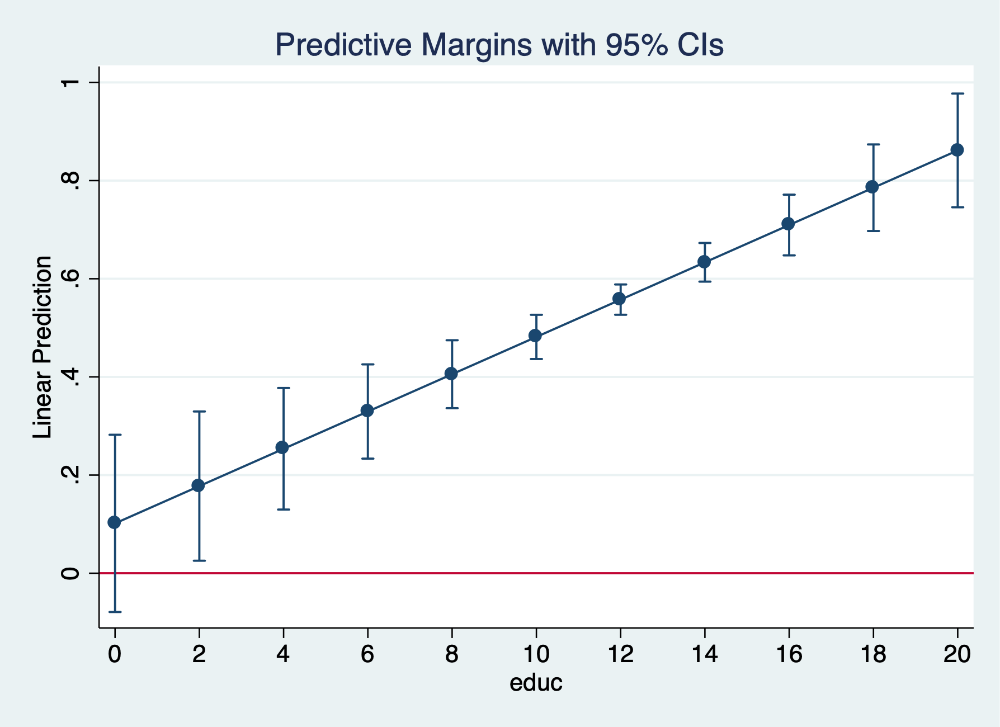
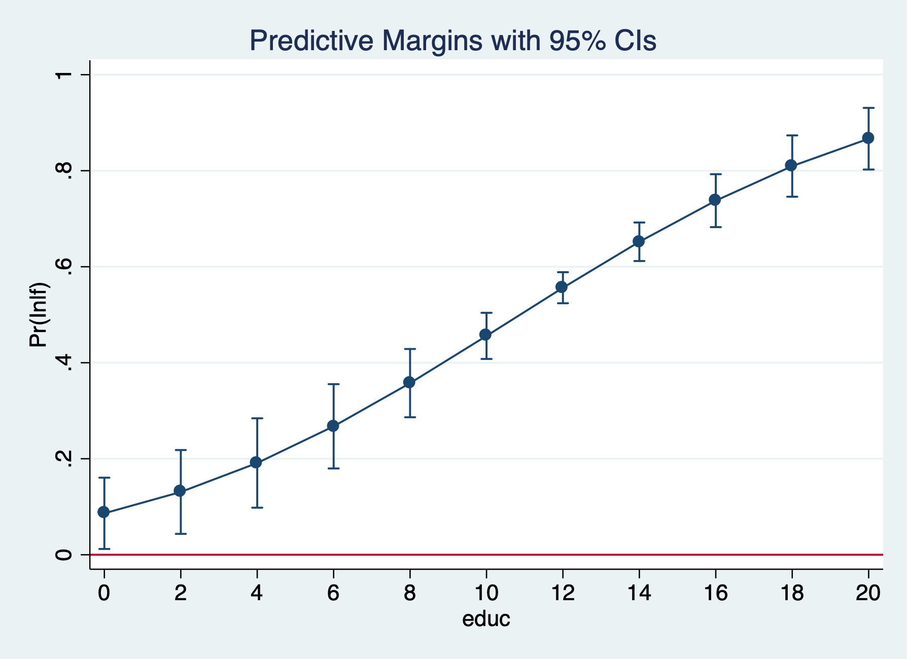
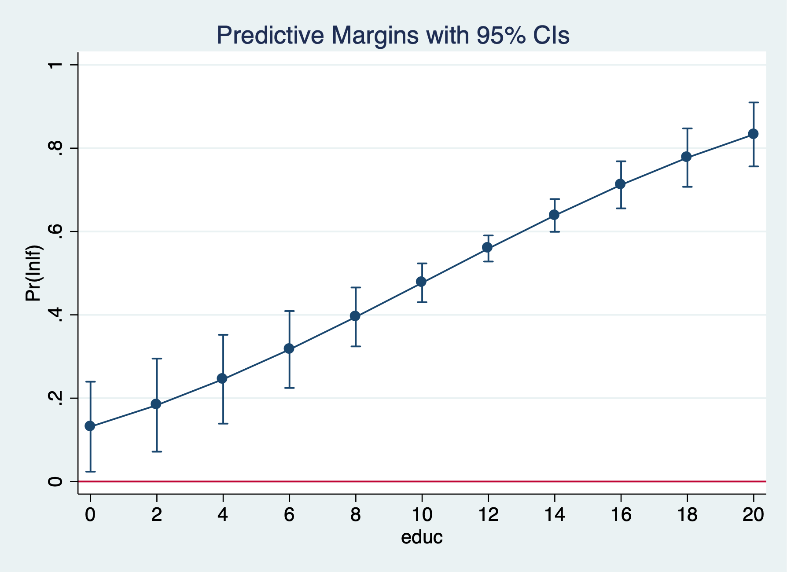
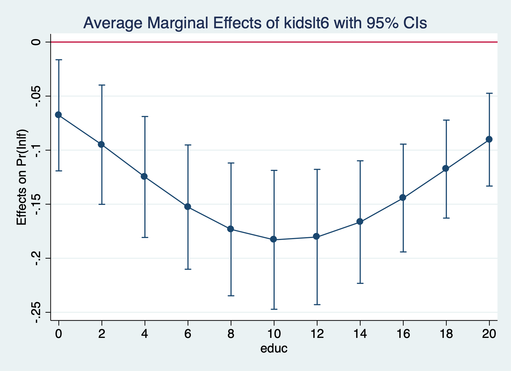

Chapter 1 Binary Outcomes
Married Women’s Labor Force Participation
We’ll use the data from Mroz (1987) to look at the probability of a married woman being in the labor force. Labor force participation is a binary response.
\[ y=[0,1] \] We will estimate the coefficients of the linear probability model (LPM), the logit estimator, and the probit estimator. Then, we’ll compare the marginal effects ofall three estimators.
Summarize in the labor force
inlf | Freq. Percent Cum.
------------+-----------------------------------
0 | 325 43.16 43.16
1 | 428 56.84 100.00
------------+-----------------------------------
Total | 753 100.00There are 325 women are not in the labor force and 428 women participating in the labor force. Our explanatory variables are non-wife income, education, experience, experience-squared, age, kids less than 6, kids greater than 6
\[ y_{i}=\beta_0 + \beta_1 spouseinc_{i} + \beta_2 edu_i + \beta_3 exp_i + \beta_4 exp^2_i + \beta_5 kidsLT6_i + \beta_6 kidsGT6_i + \varepsilon_i \]
est clear
eststo Logit: logit inlf nwifeinc educ exper expersq kidslt6 kidsge6
eststo Probit: probit inlf nwifeinc educ exper expersq kidslt6 kidsge6
esttab Logit Probit, mtitleIteration 0: log likelihood = -514.8732
Iteration 1: log likelihood = -422.78042
Iteration 2: log likelihood = -421.73851
Iteration 3: log likelihood = -421.73502
Iteration 4: log likelihood = -421.73502
Logistic regression Number of obs = 753
LR chi2(6) = 186.28
Prob > chi2 = 0.0000
Log likelihood = -421.73502 Pseudo R2 = 0.1809
------------------------------------------------------------------------------
inlf | Coef. Std. Err. z P>|z| [95% Conf. Interval]
-------------+----------------------------------------------------------------
nwifeinc | -.0301171 .0082431 -3.65 0.000 -.0462734 -.0139609
educ | .2520038 .0425492 5.92 0.000 .168609 .3353987
exper | .2057387 .0310518 6.63 0.000 .1448784 .266599
expersq | -.003913 .0009994 -3.92 0.000 -.0058718 -.0019541
kidslt6 | -.9175126 .1742458 -5.27 0.000 -1.259028 -.5759971
kidsge6 | .2226164 .0683456 3.26 0.001 .0886616 .3565713
_cons | -3.739707 .543217 -6.88 0.000 -4.804392 -2.675021
------------------------------------------------------------------------------
Iteration 0: log likelihood = -514.8732
Iteration 1: log likelihood = -422.36847
Iteration 2: log likelihood = -421.80202
Iteration 3: log likelihood = -421.80161
Iteration 4: log likelihood = -421.80161
Probit regression Number of obs = 753
LR chi2(6) = 186.14
Prob > chi2 = 0.0000
Log likelihood = -421.80161 Pseudo R2 = 0.1808
------------------------------------------------------------------------------
inlf | Coef. Std. Err. z P>|z| [95% Conf. Interval]
-------------+----------------------------------------------------------------
nwifeinc | -.017188 .00474 -3.63 0.000 -.0264782 -.0078978
educ | .1501412 .02471 6.08 0.000 .1017105 .1985719
exper | .1240105 .0183233 6.77 0.000 .0880975 .1599236
expersq | -.0023694 .0005913 -4.01 0.000 -.0035284 -.0012103
kidslt6 | -.5543317 .1038244 -5.34 0.000 -.7578238 -.3508395
kidsge6 | .1307901 .0399186 3.28 0.001 .0525511 .2090292
_cons | -2.244553 .3146254 -7.13 0.000 -2.861207 -1.627899
------------------------------------------------------------------------------
--------------------------------------------
(1) (2)
Logit Probit
--------------------------------------------
inlf
nwifeinc -0.0301*** -0.0172***
(-3.65) (-3.63)
educ 0.252*** 0.150***
(5.92) (6.08)
exper 0.206*** 0.124***
(6.63) (6.77)
expersq -0.00391*** -0.00237***
(-3.92) (-4.01)
kidslt6 -0.918*** -0.554***
(-5.27) (-5.34)
kidsge6 0.223** 0.131**
(3.26) (3.28)
_cons -3.740*** -2.245***
(-6.88) (-7.13)
--------------------------------------------
N 753 753
--------------------------------------------
t statistics in parentheses
* p<0.05, ** p<0.01, *** p<0.001We cannot compare the coefficients across the models. We will need to use marginal effects.
Average Marginal Effects (AME)
We will first look at average marginal effects. For average marginal effects, we estimate the marginal effects for each \(i\) and estimate an average.
\[ AME=(\sum^{n}_{i=1}[g(\hat{\beta_0}+x\hat{\beta})\beta_j]\Delta x_j)/n \]
Compare
(1) (2) (3)
LPM Logit Probit
------------------------------------------------------------
nwifeinc -0.00341* -0.00381* -0.00362*
(-2.35) (-2.57) (-2.51)
educ 0.0380*** 0.0395*** 0.0394***
(5.15) (5.41) (5.45)
exper 0.0395*** 0.0368*** 0.0371***
(6.96) (7.14) (7.20)
expersq -0.000596** -0.000563** -0.000568**
(-3.23) (-3.18) (-3.20)
age -0.0161*** -0.0157*** -0.0159***
(-6.48) (-6.60) (-6.74)
kidslt6 -0.262*** -0.258*** -0.261***
(-7.81) (-8.07) (-8.20)
kidsge6 0.0130 0.0107 0.0108
(0.99) (0.81) (0.83)
------------------------------------------------------------
N 753 753 753
------------------------------------------------------------
t statistics in parentheses
* p<0.05, ** p<0.01, *** p<0.001Marginal Effects at the Average (MEA)
For the marginal effects at the average, we set our \(x\) to their means within the scalar \(g(.)\) \[ MEA= g(\hat{\beta_0}+\hat{\beta_1} \bar{x_1} + ...+ \hat{\beta_k}\bar{x_k})\beta_j \Delta x_j \]
Compare
(1) (2) (3)
LPM Logit Probit
------------------------------------------------------------
nwifeinc -0.00341* -0.00519* -0.00470*
(-2.35) (-2.53) (-2.48)
educ 0.0380*** 0.0538*** 0.0511***
(5.15) (5.09) (5.19)
exper 0.0395*** 0.0501*** 0.0482***
(6.96) (6.40) (6.57)
expersq -0.000596** -0.000767** -0.000737**
(-3.23) (-3.10) (-3.14)
age -0.0161*** -0.0214*** -0.0206***
(-6.48) (-6.05) (-6.24)
kidslt6 -0.262*** -0.351*** -0.339***
(-7.81) (-7.07) (-7.32)
kidsge6 0.0130 0.0146 0.0141
(0.99) (0.80) (0.83)
------------------------------------------------------------
N 753 753 753
------------------------------------------------------------
t statistics in parentheses
* p<0.05, ** p<0.01, *** p<0.001The analysis shows that the marginal effects are fairly close across the linear probability model, Logit model, and Probit model. One additional year of education increases the probability of being in the labor force by a range of 0.038 to 0.0395 or 3.8 to 3.95 percentage points. Interestingly, one additional child less than six is associated with a drop in the probability of being in the labor force by a range of 0.258 to 0.262 or 25.8 to 26.2 percentage points.
Please not that around the means, our linear probability model, Logit, and Probit should be fairly similar. However, the marginal effects for the linear probability model are constant and will not vary across different values of \(x\).
Odds Ratios
We can use the option, or to get odds ratios after running a logit.
\[ OR = \frac{(Odds Success)}{(Odds Failure)} = \frac{p(1)/(1-p(1))}{p(0)/(1-p(0))} \]
Iteration 0: log likelihood = -514.8732
Iteration 1: log likelihood = -402.38502
Iteration 2: log likelihood = -401.76569
Iteration 3: log likelihood = -401.76515
Iteration 4: log likelihood = -401.76515
Logistic regression Number of obs = 753
LR chi2(7) = 226.22
Prob > chi2 = 0.0000
Log likelihood = -401.76515 Pseudo R2 = 0.2197
------------------------------------------------------------------------------
inlf | Odds Ratio Std. Err. z P>|z| [95% Conf. Interval]
-------------+----------------------------------------------------------------
nwifeinc | .978881 .0082436 -2.53 0.011 .9628565 .9951723
educ | 1.247536 .0541925 5.09 0.000 1.145717 1.358404
exper | 1.228593 .0393849 6.42 0.000 1.153775 1.308263
expersq | .9968509 .0010129 -3.10 0.002 .9948676 .9988381
age | .9157386 .0133451 -6.04 0.000 .8899527 .9422715
kidslt6 | .2361344 .0480734 -7.09 0.000 .158441 .3519257
kidsge6 | 1.061956 .0794234 0.80 0.422 .9171603 1.22961
_cons | 1.530283 1.316609 0.49 0.621 .2834155 8.262655
------------------------------------------------------------------------------One additional year of education is associated with a 1.25 times increase in the odds of being in the labor force (or an increase of 25%) holding all other variables constant. One additional child less than six decreases the odds of being in the labor force by a factor of 0.24 holding all other variables constant (or a decrease of 76%).
Marginal Effects of Education at different points along the curve
Linear Probability Model (LPM)
est clear
quietly reg inlf nwifeinc educ exper expersq age kidslt6 kidsge6
eststo lpm: margins, at(educ=(0(2)20)) post
marginsplot, yline(0)
Logit
quietly logit inlf nwifeinc educ exper expersq kidslt6 kidsge6
eststo logit1: margins, at(educ=(0(2)20)) post
marginsplot, yline(0)
Probit
quietly probit inlf nwifeinc educ exper expersq age kidslt6 kidsge6
eststo probit1: margins, at(educ=(0(2)20)) post
marginsplot, yline(0)The predicted probability that a married women is in the labor force rises from 47.7% for 12 years of education to 71.2% for 16 years of education.

Marginal Effects of Education at different points along the curve
Logit
quietly logit inlf nwifeinc educ exper expersq kidslt6 kidsge6
margins, dydx(kidslt6) at(educ=(0(2)20))
marginsplot, yline(0)
graph export "/Users/Sam/Desktop/Econ 645/Stata/week8_logitinlf.png", replace
Probit
quietly probit inlf nwifeinc educ exper expersq age kidslt6 kidsge6
margins, dydx(kidslt6) at(educ=(0(2)20))
marginsplot, yline(0)The average marginal effect for an additional child less than 6 rises from -18.3 percentage points to -14.4 percentage points, but the difference does not appear to be statistically significant.